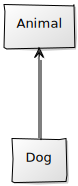
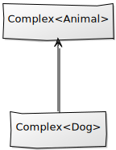
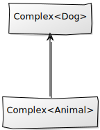

class: center, middle # C# : Covariance and Contravariance --- <div style="text-align: center;"> </div> --- # Subtyping / Inheritance<sup>1</sup> ## Simple types .cols[ .fifty[ <div style="text-align: center;"> <!-- https://yuml.me/diagram/scruffy/class/draw -->  </div> ] .fifty[ ```csharp class Animal { } class Dog : Animal {} ``` ] ] * Models **is-a** relationships * **Sub types** can replace **super types** without altering program correctness<sup>2</sup> <sup><sub><sub>1</sub></sub></sup> <sub><sub>Strictly speaking subtyping and inheritance is not exactly the same thing but close enough for this presentation</sub></sub><br/> <sup><sub><sub>2</sub></sub></sup> <sub><sub>Liskov(-ish) Substitution Principle</sub></sub> --- # Subtyping - Type conversions ### Implicit ```csharp Animal animal = new Dog(); ``` ### Explicit (might fail) ```csharp Animal animal; Dog dog = (Dog)animal; ``` --- # Subtyping - Complex types ## What are our options? .cols[ .fifty[ <div style="text-align: center;">  </div> <sub><sub>This is called **covariance**. Type relationship is maintained.</sub></sub> ] .fifty[ <div style="text-align: center;">  </div> <sub><sub>This is called **contravariance**. Type relationship is reversed.</sub></sub> ] ] --- # Subtyping - Complex types ## Lists What if **`List<Dog>`** is a subtype to **`List<Animal>`**? ```csharp List<Animal> animals = new List<Dog>(); // ??? ``` **Read** works fine... 👍 ```csharp foreach(Animal animal in animals) { // Each dog can be treated as an animal. } ``` **Write**... not so much... 👎 ```csharp animals.Add(new Cat()); // Should not be able to insert a Cat in a Dog list ``` --- # Subtyping - Complex types ## Lists What if **`List<Animal>`** is a subtype to **`List<Dog>`**? ```csharp List<Dog> dogs = new List<Animal>(); // ??? ``` **Write** works fine... 👍 ```csharp dogs.Add(new Dog()); // A dog is an animal and can be inserted ``` **Read**... not so much... 👎 ```csharp foreach(Dog dog in dogs) { // Every animal is not a dog } ``` --- # Subtyping - Complex types ## Lists In C# **`List<Dog>`** is not related to **`List<Animal>`**. List types are **invariant** and no conversion (neither implicit nor explicit) exists. * **Read+Write** data structures should be **invariant**.<sup>1</sup> * **Read only** data structures can be **covariant**. * **Write only** data structures can be **contravariant**. <sup><sub><sub>1</sub></sub></sup> <sub><sub>Arrays are covariant in C# for historic reasons. This is not type safe though.</sub></sub> --- # Subtyping - Complex types ## Enumerations **`IEnumerable<T>`** is a *read-only* representation of a **`List<T>`**. Thus the problematic *write* case goes away. ```csharp IEnumerable<Animal> animals = new List<Dog>(); ``` This works fine... 👍 because **`List<Dog>`** implements **`IEnumerable<Dog>`** and... **`IEnumerable<Dog>`** is a subtype of **`IEnumerable<Animal>`** since... **`IEnumerable<T>`** is covariance in **`T`**. --- # Subtyping - Complex types ## Actions **`Action<T>`** is contravariant in **`T`**. ```csharp class Animal { } class Dog : Animal { public void Pet() {} } class Bulldog : Dog { } Action<Dog> beNiceToDog = dog => dog.Pet(); ``` If covariant this would work ```csharp Action<Animal> beNiceToAnimal = beNiceToDog; beNiceToAnimal(new Fish()); // Cannot pet animals in general ``` Due to contravariance, this works however ```csharp Action<Bulldog> beNiceToBulldog = beNiceToDog; beNiceToBulldog(new Bulldog()); // Bulldogs are dogs so this works ``` --- # Variance Conversion "Upcast" works... ```csharp IEnumerable<Dog> dogs; IEnumerable<Animal> animals = dogs; ``` ...but how about "downcast"? ```csharp IEnumerable<Animal> animals; IEnumerable<Dog> dogs = (IEnumerable<Dog>)animals; ``` Does not work. 👎 --- # Variance Conversion (continued) C# does not follow covariance (nor contravariance) all the way. Variant types are converted according to the specific rules of **variance conversion**. For **`A<S>`** to be *variant convertable* to **`A<T>`** it is required that **`S`** can be *implicitly converted* to **`T`**. Probable motive; cast can be expensive or hard to prove. ```csharp IEnumerable<Animal> animals = new List<Animal> { ..., // long list of dogs new Cat() }; IEnumerable<Dog> dogs = (IEnumerable<Dog>)animals; ``` --- # C# syntax ### Covariance Covariant type parameters are declared using the **out** keyword. ```csharp public interface IEnumerable<out T> ... ``` ### Contravariance Contravariant type parameters are declared using the **in** keyword. ```csharp public delegate void Action<in T>(T obj); ``` --- # Back to the question This does not work. Lists are invariant. 👎 ```csharp List<List<Derived>> derived = new List<List<Derived>>(); List<List<Base>> @base = derived; ``` This does not work because variance conversion requires implicit conversion from **`Derived`** to **`Base`**. 👎 ```csharp List<List<Derived>> derived = new List<List<Derived>>(); IEnumerable<IEnumerable<Base>> @base = (IEnumerable<IEnumerable<Base>>)derived; ``` Upcast works though. **`IEnumerable<Derived>`** is variance convertable to **`IEnumerable<Base>`**. 👍 ```csharp IEnumerable<IEnumerable<Derived>> derived = new List<List<Derived>>(); IEnumerable<IEnumerable<Base>> @base = derived; ``` --- # Summary **`IEnumerable<T>`** is covariant. Thus, this works: ```csharp IEnumerable<Dog> dogs; IEnumerable<Animal> animals = dogs; ``` **`Action<T>`** is contravariant. Thus, this works: ```csharp Action<Animal> takeCareOfAnimal; Action<Dog> takeCareOfDog = takeCareOfAnimal; ```